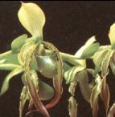

เมนู |

รองเท้านารีเมืองกาญจน์ ค้นพบเมื่อ พ.ศ. 2402 ถิ่นกำเนิดอยู่แถบจังหวัดกาญจบุรีและกำแพงเพชร เป็นกล้วยไม้อากาศเกาะอยู่ตามต้นไม้มีลักษณะเด่น คือ มีกลีบในคู่บิดเป็นเกลียวเป็นสายยาวกว่ากลีบนอกประมาณสามเท่าตัว |
| ประวัติกล้วยไม้ไทย | |
| รองเท้านารีอินทนนท์ | |
| รองเท้านารีเหลืองปราจีน | |
| รองเท้านารีเมืองกาญจน์ | |
| รองเท้านารีเหลืองตรัง | |
| รองเท้านารีอ่างทอง | |
| รองเท้านารีสุขะกุล | |
| รองเท้านารีเหลืองกระบี่ | |
| รองเท้านารีเหลืองพังงา | |
| รองเท้านารีคางกบ | |
| รองเท้านารีฝาหอย |